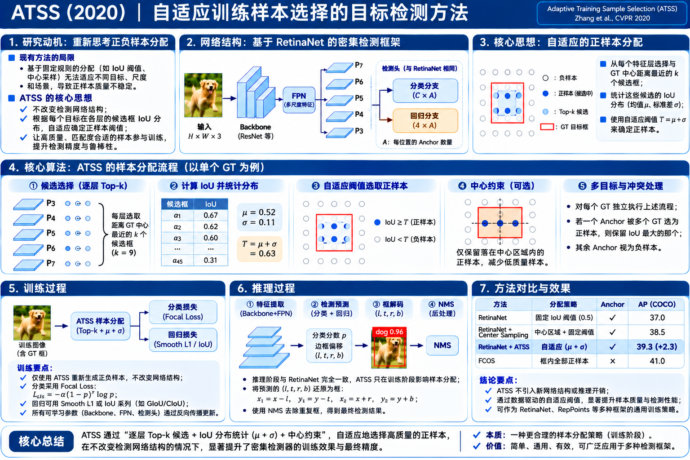

RetinaNet · Anchor-based
固定 IoU 匹配
训练时 Anchor 与 GT 的 IoU 决定正、负或忽略。一个对所有目标都相同的阈值，可能让难以匹配的目标拥有很少正样本。
IoU ≥ 0.5 → 正样本 （典型基线）
已经有 RetinaNet 的 Anchor 和 FCOS 的 Anchor-Free，为什么两种看起来不同的检测路线，性能差距却可能主要来自谁被当作正样本？ATSS 的回答是：每个 GT 根据自己的候选 IoU 分布，自适应决定哪些位置应该负责检测它。

ATSS 首先做的是控制变量实验，而不是直接更换网络结构。
训练时 Anchor 与 GT 的 IoU 决定正、负或忽略。一个对所有目标都相同的阈值，可能让难以匹配的目标拥有很少正样本。
在目标框内选特征点，再根据预设的 FPN 回归范围分配层级。没有 Anchor，但依旧存在需要人工确定的分配规则。
先找靠近 GT 中心的候选，统计这组候选与 GT 的 IoU，计算其均值和标准差，得到每个 GT 自己的阈值。
前向计算仍然是一个密集单阶段检测器；ATSS 是训练时的监督分配器。
同一张图像经 Backbone、FPN P3–P7、密集检测头得到类别分数、框偏移 / 边界距离、可选定位质量分数。可以从 Anchor Box 回归，也可以从 Anchor Point 回归；输出编码取决于选用的检测器。
ATSS 不发明一个固定的“ATSS Head”。所谓“ATSS 检测器”通常是现有头部与 ATSS 分配策略的组合。
GT、FPN Anchor 与预测无关的几何信息先进入 ATSS 分配器。输出 前景 / 背景标签、匹配 GT、回归监督目标。分类损失作用于正负样本；定位与质量损失通常只作用于正样本。
ATSS 的 Top-k、IoU 统计、阈值判断属于离散标签生成；不需要反向传播穿过样本分配器，梯度沿预测值 → Head / Neck / Backbone 传播。
明确每一步的输入、计算、输出；下方的实验会实际运行这五步。
对 GT 中心 (cₓ,cᵧ)，在每个 FPN 层选中心距离最近的 k 个 Anchor。
Top-k |centerₐ − center_g|₂
P3–P7 各 k 个。五层 k=9 时，一共 45 个候选。
C_g = ⋃ C_g,l
计算每个候选与该 GT 的 IoU，再计算所有 IoU 的均值 μ、标准差 σ。
D_g = {IoU(a,g)}
IoU ≥ μ + σ，并且 Anchor 中心在 GT 内，才是该 GT 的正候选。
t_g = μ_g + σ_g
同一 Anchor 若对多个 GT 都满足正样本条件，选择与其 IoU 最大的 GT。
argmax_g IoU(a,g)
实时重新计算 Anchor 位置、最近邻、45 个 IoU、μ / σ、正样本。下图不是静态示意数据。
灰色细点：当前层局部锚框中心；带圈的点：本层 Top-k；虚线方框：单个样例 Anchor
动态计算中…
| 层 | Stride | Anchor 边长 | Top-k | 平均 IoU | 正样本 |
|---|
不是为了简单压缩公式，而是同时考虑候选质量与不同 FPN 层的区分度。
当 GT 与某层的 Anchor 形状、尺寸比较匹配，许多候选的 IoU 上升，整体均值也可能上升。不同目标不应被迫使用同一个固定 IoU 阈值。
它统计的是从每个 FPN 层先按中心距离找出的候选，并非所有 Anchor 的 IoU 平均。
若某一层的 Anchor 显著更合适，IoU 分布容易出现高峰和较大离散度；增加 σ 能提高阈值，优先保留真正高质量的候选。反之，多个层质量较接近时阈值可能较低。
标准差衡量的是整个候选集的离散程度，不能单独推断某一层必然最优。
—
这里使用论文图 3 所示的五个代表性层值作概念演示；真实 ATSS 则从 45 个候选的全部 IoU 计算。
将正样本冲突化为明确的 IoU 比较，而不是让一个位置同时监督两个类别。
—
未通过某个 GT 的候选筛选时，不能仅凭这里的 IoU 抢占该 GT；本实验仅用于解释最后一步的冲突规则。
先分配监督，再计算可微损失。离散样本分配规则本身没有可学习参数。
对每个 GT 运行 Top-k / IoU / μ+σ / 中心限制；根据最终匹配生成 分类标签 y，对正样本生成边框回归目标，并生成所选实现的质量分支目标。
论文控制变量的单阶段检测实验统一采用包括 Focal Loss、GIoU Loss 和 Center-ness 等检测器组件；不同代码配置可能不同。
此处是任务结构示意，不把 λ 的具体取值或质量分支错误地当作 ATSS 固有公式。分类监督涵盖正负样本，回归与质量通常仅对正样本计算。
会更新：Backbone（是否冻结部分层依配置）、FPN 卷积、检测头卷积、分类/回归/质量分支中的可学习参数。
不会作为梯度参数更新：k、Top-k 匹配规则、IoU 阈值公式、GT 框、静态 Anchor 模板。k 是超参数，μ/σ 每次根据数据重新计算，不是一个要学习的权重。
公平比较基线：COCO trainval35k、ResNet-50 + FPN、P3–P7、每位置一个边长 8×stride 的方形 Anchor。短边缩放为 800（长边不超过 1333）；16 张 / batch；SGD，90k iteration。
较高 AP 模型使用更大的 Backbone、较长训练、多尺度训练和可选 DCNv2。请不要把最佳 50.7 AP 误解为基础 R50 单尺度版本。
训练阶段学到的参数继续工作；测试阶段没有 GT，也不用计算 μ、σ 或 Top-k 正样本。
每个 FPN 位置给出类别预测，回归分支给出从 Anchor Box 的四偏移或从点到四边的距离。依据网络所用的编码方式将预测解码成原图坐标。
如有 Center-ness，可用于调整最终排序分数。其具体融合公式是检测器实现细节，不属于 ATSS 分配算法。
论文统一基线的推理配置：低于 0.05 的候选先过滤，每层取最高分候选的 Top 1000，再对每类使用 NMS（IoU = 0.6），最终每张图保留 Top 100。
这些是论文特定实验的设置，不是 ATSS 对所有检测器的强制要求。
—
分数为示例数据；交叠判断与保留顺序真实计算。训练时的正负标签变化影响训练后的预测质量，但推理流程本身不执行 ATSS。
为避免历史叙事变成口号，这里保留原论文可复核的数据。
| 训练样本规则 | Anchor Box AP | Anchor Point AP |
|---|---|---|
| IoU 分配 | 37.0 | 36.9 |
| 空间 + 尺度规则 | 37.8 | 37.8 |
CVPR 2020 原论文 Table 2；在统一检测器训练细节后的控制变量比较。支持“样本分配规则关键，框回归起点不是主要差异”的研究结论。
| 方法 | COCO minival AP | 机制 |
|---|---|---|
| RetinaNet (#A=1) | 37.0 | 传统 IoU |
| RetinaNet + ATSS | 39.3 | μ+σ |
| FCOS | 37.8 | 框内 + 层级 |
| FCOS + Center Sampling | 38.6 | 中心附近候选（简化版） |
| FCOS + 完整 ATSS | 39.2 | 动态 IoU 阈值 |
CVPR 2020 原论文 Table 3；这些数字来自相同论文的实验条件，不可直接拿来与不同论文训练设置的 SOTA 指标比较。
k 取 7～17 时结果较稳定，k 过小时统计不稳定，k 过大时混入较多低质量候选。这个结论是论文中的特定检测设置下的经验结果，不代表任意模型都可无调参照搬。
在严格控制检测器其他差异后，表明 正负样本定义 是中心式 Anchor-Free 与 Anchor-based 差距的重要来源。
每个 GT 自己决定 IoU 阈值，不必人为给所有目标统一设一个绝对门槛，也不必完全依赖固定尺度区间。
论文实验证实，在 ATSS 规则下，多种 Anchor 数量、尺度和宽高比配置的性能差异很小；在该设置里一位置一个 Anchor 足够有竞争力。
把几个常见误解收束成可以复用的算法记忆锚点。
不是。每个 GT 在每一个 FPN 层按照 Anchor 中心到 GT 中心的欧氏距离，先各选最近的 k=9 个；再对整个候选集合统计 IoU。
每个 GT 算一次。五层共 45 个候选，在一起计算 IoU 均值、标准差及该 GT 专属阈值；不同 GT 的阈值不必相同。
ATSS 是一种训练样本分配方法。原论文将其用于 Anchor-based RetinaNet（每位置一个方形 Anchor）和 Anchor-free FCOS；是否预设 Anchor、从框还是点回归，由承载的检测器决定。
不需要。它用几何规则构造监督标签，预测的分类和框回归损失才对网络参数计算梯度。它是一个独立的训练分配环节。
因为测试阶段没有 GT，也不用计算 Top-k / 均值 / 标准差。继续执行原单阶段检测器的特征、分类、回归与 NMS 流程。训练统计会增加计算，但不引入额外的推理网络分支。
原论文：Shifeng Zhang, Cheng Chi, Yongqiang Yao, Zhen Lei, Stan Z. Li. Bridging the Gap Between Anchor-based and Anchor-free Detection via Adaptive Training Sample Selection. CVPR 2020. 论文 Section 3–4、Algorithm 1、Table 2–7。
CVF 官方论文页面 · 论文 PDF · 作者官方实现
互动实验的场景、候选可视化和 NMS 示例为教学构造，不是论文原始可视化；匹配几何、阈值计算和 NMS 实际由本页 JavaScript 计算。文中所有明确标识为论文 Table 的数据来自原文。